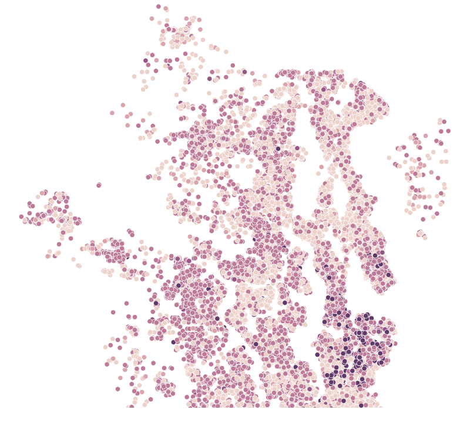

Get to know the professions
in the field of data and AI
Welcome to our web page dedicated to the dynamic field of data and
Artificial Antelligence (AI) professions. Here, we provide valuable insights
into the various roles and opportunities available.
Welcome to Florence website, we help new generation to know some professions in this era
Why Florence Group want you to know it?
Understanding why we should be familiar with the various professions in the field of data
and AI is crucial for making informed career choices and capitalizing on the vast opportunities
that this domain offers.
This website is run by Florence Group, the data collected from this was done be processed by @ryxhna.